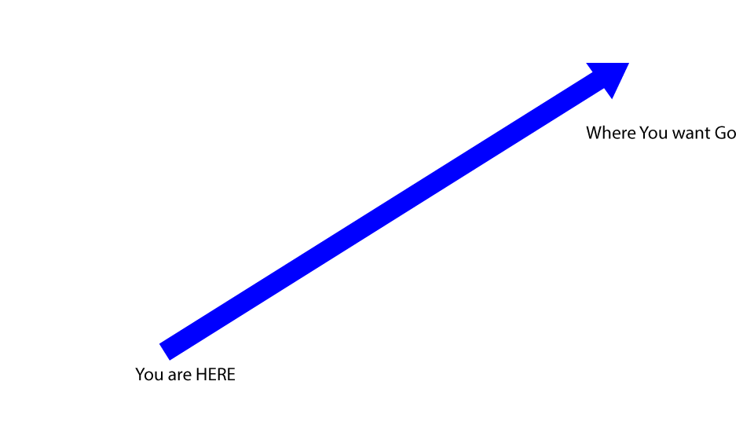
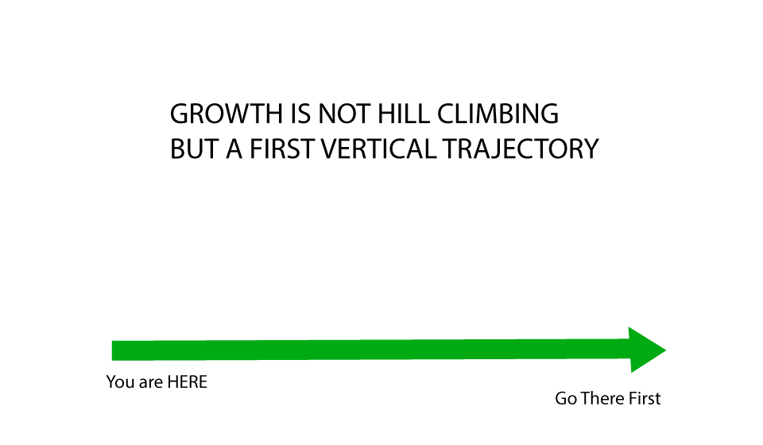
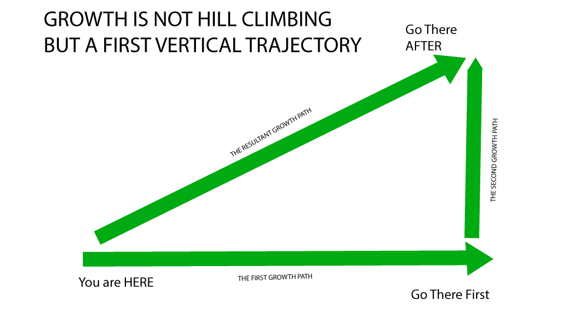

Jun 1, 2020
Simple Math for Growth
A simple mathematical mindset can explain a lot of things. For example, if we try to understand growth simply with simple math knowledge we can see it as a translation.
This kind of translation

But if you take just this translation you are going to stay in trouble. This single one translation is a composition of two other simple translations
the first is vertical

and the second horizontal.

If you adapt it with growth concept you can take the vertical translation as the change of market the vertical ax is related to market or customer category when the horizontal ax is the size of this market or customer base. But don’t take the market size or customer size like counting numbers of the population in reality it’s related to the revenue you can get. You can do a translation where the target position will have fewer customers but those customers are willing to pay premium prices compared to the original customer segment. Like Seth Godin used to say it is better to have some customer which love your products and pay a premium price because they love what you do than million of customers paying you some pennies and seeing your product as a boring and shiftable product.
I can say a lot about this simple way of understanding growth with simple math but I just wanted to highlight it and keep it online as a sticky note for further development.
Growth isn’t a hill-climbing but it’s a composition of two simple translations.
I think you can get more about like this